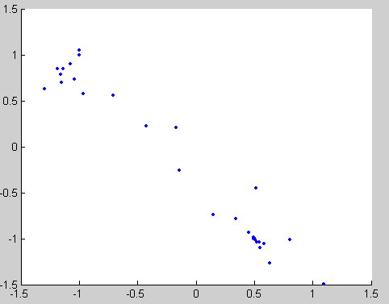

Optimization Solver Output Functions
What Is an Output Function?
An output function is a function that an optimization function calls at each iteration of its algorithm. Typically, you use an output function to generate graphical output, record the history of the data the algorithm generates, or halt the algorithm based on the data at the current iteration. You can create an output function as a function file, a local function, or a nested function.
You can use the OutputFcn option with the
following MATLAB® optimization functions:
Creating and Using an Output Function
The following is a simple example of an output function that plots the points generated by an optimization function.
function stop = outfun(x, optimValues, state) stop = false; hold on; plot(x(1),x(2),'.'); drawnow
You can use this output function to plot the points generated
by fminsearch in solving the optimization problem
To do so,
Create a file containing the preceding code and save it as
outfun.min a folder on the MATLAB path.Set the value of the
Outputfcnfield of theoptionsstructure to a function handle tooutfun.options = optimset('OutputFcn', @outfun);Enter the following commands:
hold on objfun=@(x) exp(x(1))*(4*x(1)^2+2*x(2)^2+x(1)*x(2)+2*x(2)); [x fval] = fminsearch(objfun, [-1 1], options) hold off
These commands return the solution
x = 0.1290 -0.5323 fval = -0.5689and display the following plot of the points generated by
fminsearch:
Structure of the Output Function
The function definition line of the output function has the following form:
stop = outfun(x, optimValues, state)
where
stopis a flag that istrueorfalsedepending on whether the optimization routine halts or continues. See Stop Flag.xis the point computed by the algorithm at the current iteration.optimValuesis a structure containing data from the current iteration. Fields in optimValues describes the structure in detail.stateis the current state of the algorithm. States of the Algorithm lists the possible values.
The optimization function passes the values of the input arguments
to outfun at each iteration.
Example of a Nested Output Function
The example in Creating and Using an Output Function does not require the output function to preserve data from one iteration to the next. When you do not need to save data between iterations, you can write the output function as a function file and call the optimization function directly from the command line. However, to have an output function to record data from one iteration to the next, write a single file that does the following:
Contains the output function as a nested function—see Nested Functions in MATLAB Programming Fundamentals for more information.
Calls the optimization function.
In the following example, the function file also contains the objective function as a local function. You can instead write the objective function as a separate file or as an anonymous function.
Nested functions have access to variables in the surrounding file. Therefore, this method enables the output function to preserve variables from one iteration to the next.
The following example uses an output function to record the fminsearch iterates
in solving
The output function returns the sequence of points as a matrix
called history.
To run the example, do the following steps:
Open a new file in the MATLAB Editor.
Copy and paste the following code into the file.
function [x fval history] = myproblem(x0) history = []; options = optimset('OutputFcn', @myoutput); [x fval] = fminsearch(@objfun, x0,options); function stop = myoutput(x,optimvalues,state); stop = false; if isequal(state,'iter') history = [history; x]; end end function z = objfun(x) z = exp(x(1))*(4*x(1)^2+2*x(2)^2+x(1)*x(2)+2*x(2)); end end
Save the file as
myproblem.min a folder on the MATLAB path.At the MATLAB prompt, enter
[x fval history] = myproblem([-1 1]);
The function fminsearch returns x,
the optimal point, and fval, the value of the objective
function at x.
x,fval
x =
0.1290 -0.5323
fval =
-0.5689In addition, the output function myoutput returns
the matrix history, which contains the points generated
by the algorithm at each iteration, to the MATLAB workspace.
The first four rows of history are
history(1:4,:)
ans = -1.0000 1.0000 -1.0000 1.0000 -1.0750 0.9000 -1.0125 0.8500
The final row of points in history is the
same as the optimal point, x.
history(end,:)
ans =
0.1290 -0.5323objfun(history(end,:))
ans = -0.5689
Fields in optimValues
The following table lists the fields of the optimValues structure
that are provided by the optimization functions fminbnd, fminsearch,
and fzero.
The “Command-Line Display Headings” column of
the table lists the headings that appear when you set the Display parameter
of options to 'iter'.
optimValues Field (optimValues.field) | Description | Command-Line Display Heading |
|---|---|---|
| Cumulative number of function evaluations |
|
| Function value at current point |
|
| Iteration number — starts at |
|
| Procedure messages |
|
States of the Algorithm
The following table lists the possible values for state:
State | Description |
|---|---|
| The algorithm is in the initial state before the first iteration. |
| The algorithm is performing an iteration. In this state,
the output function can halt the current iteration of the optimization.
You might want the output function to halt the iteration to improve
the efficiency of the computations. When state is set to |
| The algorithm is at the end of an iteration. |
| The algorithm is in the final state after the last iteration. |
The following code illustrates how the output function uses
the value of state to decide which tasks to perform
at the current iteration.
switch state case 'init' % Setup for plots or dialog boxes case 'iter' % Make updates to plots or dialog boxes as needed case 'interrupt' % Check conditions to see whether optimization % should quit case 'done' % Cleanup of plots, dialog boxes, or final plot end
Stop Flag
The output argument stop is a flag that is true or false.
The flag tells the optimization function whether the optimization
halts (true) or continues (false).
The following examples show typical ways to use the stop flag.
Stopping an Optimization Based on Data in optimValues
The output function can stop an optimization at any iteration
based on the current data in optimValues. For example,
the following code sets stop to true if
the objective function value is less than 5:
function stop = myoutput(x, optimValues, state) stop = false; % Check if objective function is less than 5. if optimValues.fval < 5 stop = true; end
Stopping an Optimization Based on Dialog Box Input
If you design a UI to perform optimizations, you can have the
output function stop an optimization with, for example, a Stop button.
The following code shows how to do this callback. The code assumes
that the Stop button callback stores the value true in
the optimstop field of a handles structure
called hObject stored in appdata.
function stop = myoutput(x, optimValues, state) stop = false; % Check if user has requested to stop the optimization. stop = getappdata(hObject,'optimstop');